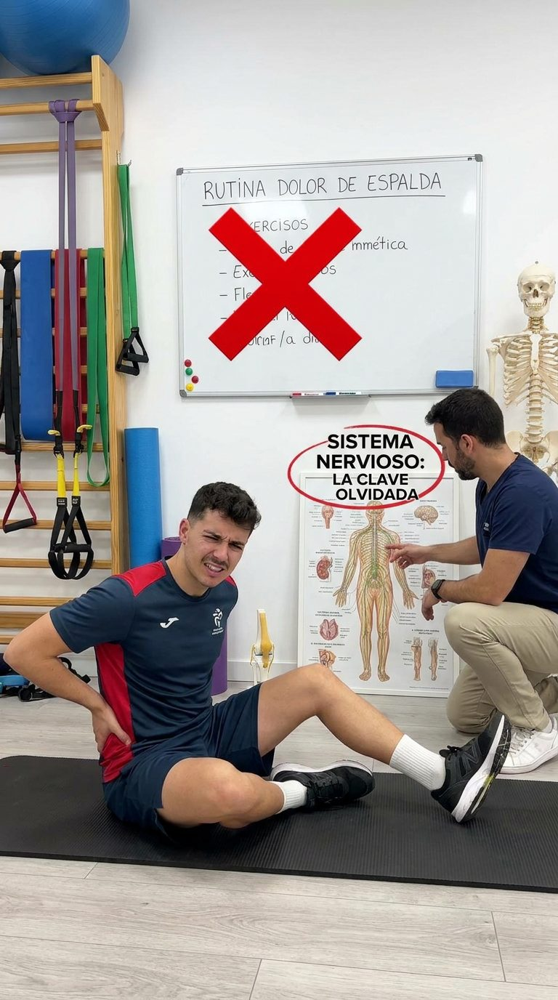
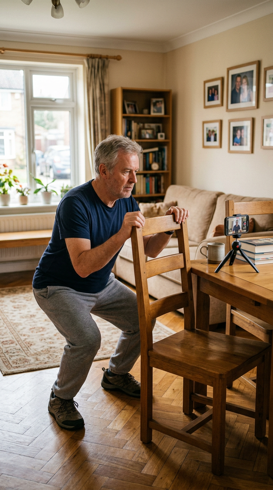

Evaluá si nuestros protocolos se adaptan a tus necesidades
8 preguntas · 2 minutos · Descubrí qué protocolo de movimiento es el indicado para vos
Elegí tu zona para empezar
Antes de empezar
¿Dónde es tu dolor principal?
Cuello & Espalda
Rodilla & Cadera
Seguimiento diario
Así se ven los protocolos en la app
Pregunta 01 / 08
¿Dónde sentís el dolor con más frecuencia?
Pregunta 02 / 08
¿Cuándo aparece o empeora el dolor?
Pregunta 03 / 08
¿Cómo describirías tu dolor?
Pregunta 04 / 08
¿Qué alivia (aunque sea temporalmente) el dolor?
Pregunta 05 / 08
¿Cuántas horas al día pasás sentada?
Pregunta 06 / 08
¿Qué intentaste sin resultados duraderos?
Pregunta 07 / 08
¿El dolor afecta tu sueño o descanso?
Pregunta 08 / 08
¿Cuánto tiempo llevás con este dolor?
Pregunta 01 / 08
¿Dónde sentís el dolor con más frecuencia?
Pregunta 02 / 08
¿Cuándo aparece o empeora el dolor?
Pregunta 03 / 08
¿Cómo describirías tu dolor?
Pregunta 04 / 08
¿Qué alivia (aunque sea temporalmente) el dolor?
Pregunta 05 / 08
¿Evitás ciertos movimientos por miedo al dolor?
Pregunta 06 / 08
¿Qué intentaste sin resultados duraderos?
Pregunta 07 / 08
¿El dolor afecta tu actividad diaria (caminar, escaleras, mandados)?
Pregunta 08 / 08
¿Cuánto tiempo llevás con este dolor?
Pregunta 01 / 08
¿Cuál zona te genera más urgencia de mejorar?
Pregunta 02 / 08
¿Cuándo sentís más el dolor?
Pregunta 03 / 08
¿Cómo describirías el dolor más frecuente?
Pregunta 04 / 08
¿Cuántas horas al día estás sentada o en la misma posición?
Pregunta 05 / 08
¿Qué intentaste sin resultados duraderos?
Pregunta 06 / 08
¿El dolor afecta tu descanso o tu sueño?
Pregunta 07 / 08
¿Cuánto tiempo llevás con dolores en estas zonas?
Pregunta 08 / 08
¿Qué limitación te molesta más en el día a día?
🔶
Perfil Postural
Tu dolor es postural
Aquí está lo que está pasando en tu cuerpo
🔍 ¿Qué significa este perfil?
⚡ Por qué no mejoraba hasta ahora
✅ Tu punto de partida

Durante años te enseñaron a repetir la misma rutina de ejercicios genéricos, sin mirar la causa real. La clave olvidada es el movimiento correcto, progresivo y personalizado — y es exactamente lo que tu protocolo sí tiene en cuenta.
🧠 Por qué el dolor de espalda y cuello no se va solo (aunque hayas probado de todo)
Top 6El dolor cervical está entre las 6 primeras causas de discapacidad en el mundo — más que los accidentes de tránsito.
El problema no son tus músculos ni tus huesos: es el patrón de movimiento que tu cuerpo aprendió para protegerse, y que ahora ya no sabe cómo apagar. Cada vez que duele, evitás moverte; cada vez que evitás moverte, le confirmás al cuerpo que moverse es peligroso — y con el tiempo, el dolor se vuelve "normal".
La buena noticia (y es real): ese ciclo se corta con el estímulo correcto — movimiento progresivo y guiado, no reposo ni estiramientos genéricos al azar. Es el mismo cuerpo que aprendió a doler el que puede aprender a moverse sin dolor.
Esto dicen quienes ya lo probaron
★★★★★
Por fin entendí por qué me dolía, y eso ya fue un cambio enorme. Ahora termino 9 horas frente al monitor sin ese nudo insoportable entre los omóplatos. Todavía no lo puedo creer.
— Carlos, Abogado · 9 hs/día frente a la pantalla
★★★★★
Entre la facu, la compu y el sobrepeso, mi espalda vivía contracturada. Lo mejor fue que nunca me sentí juzgado ni fuera de estado físico — arranqué con las versiones fáciles y fui mejorando. Después de los 28 días siento más estabilidad y menos dolor lumbar.
— Felipe, Estudiante universitario
★★★★★
Tengo 69 años y pensé que ya era tarde para mejorar mis dolores. Me daba miedo moverme — siempre escuché "cuidate la columna". La guía me ayudó a perder ese miedo: hoy puedo caminar más, dormir mejor y hasta jugar con mis nietos sin quedar dolorida al otro día.
— Susana, Jubilada · 69 años
Testimonios reales de usuarios. Los resultados pueden variar según cada caso.
Mirá por dentro
Esto es lo que vas a tener en tu celular
Sin nada difícil ni complicado: rutinas guiadas paso a paso, seguimiento de tu progreso día a día y ejercicios pensados para tu perfil. Solo compromiso y ganas de que no duela más.
Tu próximo paso
El único protocolo que trabaja la causa real: el movimiento correcto
15 minutos al día. Notás los primeros cambios en la primera semana, y en 28 días tu cuerpo aprende un patrón nuevo — de por vida. No es otra rutina genérica de estiramientos: es un protocolo personalizado a tu perfil, con seguimiento día a día desde el celular. Incluye la Guía en PDF de regalo.
Las dos apps con sus 15 minutos diarios guiados, cada una con su Guía en PDF incluida de regalo — para cubrir las dos zonas, dentro y fuera del celular, con o sin internet.
Importante: los 28 días son el tiempo que tu cuerpo necesita para aprender a moverse sin dolor — no es el tiempo que vas a poder usar la App. El acceso a la App no vence nunca: la tenés de por vida, para sostener el cambio, volver cuando la necesites y realmente transformar tu calidad de vida a largo plazo.
28 díaspara que tu cuerpo aprenda a moverse sin dolor
+
De por vidaacceso a la App, para usarla siempre
🛡️ Si en 7 días no ves mejoras, te devolvemos el dinero.
¿Todavía tenés dudas?
Mirá cómo es la app por dentro, testimonios reales de quienes ya la probaron y las preguntas más frecuentes antes de decidir.
Recuperar movilidad no es solo "no dolor" — es volver a caminar, viajar y disfrutar el tiempo con los tuyos sin miedo a moverte.

Ejercicios seguros y progresivos, con apoyo cuando lo necesitás — pensados para sumar fuerza sin forzar la articulación.
🧠 Por qué el miedo a moverte empeora el dolor de rodilla y cadera
22,9%de las personas mayores de 40 años tiene algún grado de artrosis de rodilla.
Cuando duele la rodilla o la cadera, lo natural es evitar el movimiento que duele. Tiene sentido — pero sostenido en el tiempo, es justo lo que perpetúa el problema: el músculo que sostiene la articulación se debilita, la articulación absorbe más impacto del que debería, y duele más.
La buena noticia (y es real): con el movimiento correcto, progresivo y guiado, ese ciclo se revierte a cualquier edad. Los músculos que protegen tu rodilla y cadera pueden recuperar fuerza y estabilidad, sin forzar la articulación.
Esto dicen quienes ya lo probaron
★★★★★
Llevaba meses evitando salir a caminar por miedo a ese pinchazo en la cadera. Este protocolo no solo me dio ejercicios, sino que me enseñó por qué me dolía y cómo trabajarlo. ¡Ya estoy haciendo senderismo de nuevo sin miedo!
— Julián R., 48 años
★★★★★
Mis rodillas se sentían "oxidadas" después de estar mucho tiempo sentada trabajando. El programa de 14 días fue el empujón que necesitaba para retomar hábitos saludables. Los "datos del día" me ayudaron a romper mitos que yo misma creía ciertos sobre el desgaste.
— Sofía T., 39 años
★★★★★
Lo que más me gustó fue el tono humano y el acompañamiento. Me ayudó a gestionar mis expectativas y a ganar confianza en que, con movimiento consciente, se puede vivir con mucha mejor calidad de vida.
— Lucía D., 52 años
Testimonios reales de usuarios. Los resultados pueden variar según cada caso.
Mirá por dentro
Esto es lo que vas a tener en tu celular
Sin nada difícil ni complicado: rutinas guiadas paso a paso, seguimiento de tu progreso día a día y ejercicios pensados para tu perfil. Solo compromiso y ganas de moverte sin dolor.
Tu próximo paso
El único protocolo que trabaja la causa real: fuerza y movilidad, no solo el síntoma
15 minutos al día. Notás los primeros cambios en la primera semana, y en 14 días tu cuerpo recupera un patrón de movimiento más seguro — de por vida. No es otra rutina genérica: es un protocolo personalizado a tu perfil, con seguimiento día a día desde el celular.
Importante: los 14 días son el tiempo que tu cuerpo necesita para recuperar fuerza y estabilidad — no es el tiempo que vas a poder usar la App. El acceso a la App no vence nunca: la tenés de por vida, para sostener el cambio, volver cuando la necesites y realmente transformar tu calidad de vida a largo plazo.
14 díaspara recuperar fuerza y movilidad
+
De por vidaacceso a la App, para usarla siempre
¿Todavía tenés dudas?
Mirá cómo es la app por dentro, testimonios reales de quienes ya la probaron y las preguntas más frecuentes antes de decidir.
Recuperar movilidad en las dos zonas no es solo "no dolor" — es volver a moverte con confianza, sin pensarlo dos veces. Cuando el cuerpo compensa entre zonas, tratarlas juntas es lo que realmente funciona.
🧠 Por qué tratar las dos zonas juntas cambia el resultado
Top 6El dolor cervical está entre las 6 primeras causas de discapacidad en el mundo.
22,9%de los mayores de 40 años tiene algún grado de artrosis de rodilla.
Cuando el cuerpo acumula tensión en dos zonas a la vez, no son dos problemas separados: son compensaciones que viajan de una a la otra. Lo que empieza en la espalda le exige de más a la rodilla, y viceversa — por eso tratar una sola casi nunca alcanza.
La buena noticia: con el movimiento correcto, progresivo y guiado en cada zona, ese ciclo se corta desde los dos frentes al mismo tiempo — 15 minutos por día, en días alternos.
Esto dicen quienes ya lo probaron
★★★★★
Por fin entendí por qué me dolía, y eso ya fue un cambio enorme. Ahora termino 9 horas frente al monitor sin ese nudo insoportable entre los omóplatos.
— Carlos, Abogado · 9 hs/día frente a la pantalla
★★★★★
Llevaba meses evitando salir a caminar por miedo a ese pinchazo en la cadera. Este protocolo me enseñó por qué me dolía y cómo trabajarlo. ¡Ya estoy haciendo senderismo de nuevo sin miedo!
— Julián R., 48 años
★★★★★
Tengo 69 años y pensé que ya era tarde para mejorar mis dolores. La guía me ayudó a perder el miedo a moverme: hoy puedo caminar más, dormir mejor y hasta jugar con mis nietos sin quedar dolorida al otro día.
— Susana, Jubilada · 69 años
Testimonios reales de usuarios. Los resultados pueden variar según cada caso.
Mirá por dentro
Esto es lo que vas a tener en tu celular
Sin nada difícil ni complicado: rutinas guiadas paso a paso para cada zona, seguimiento de tu progreso día a día y ejercicios pensados para tu perfil.
Las dos apps con sus 15 minutos diarios guiados, cada una con su Guía en PDF incluida de regalo — para trabajar las dos zonas en paralelo, dentro y fuera del celular.
Importante: el tiempo del protocolo (28 días para Cuello & Espalda, 14 para Rodilla & Cadera) es lo que tu cuerpo necesita para aprender el patrón nuevo — no es el tiempo que vas a poder usar las Apps. El acceso a las dos Apps no vence nunca: las tenés de por vida, para sostener el cambio y volver cuando las necesites.
28 + 14 díaspara que tu cuerpo aprenda a moverse sin dolor en las dos zonas
+
De por vidaacceso a las dos Apps, para usarlas siempre
🛡️ Si en 7 días no ves mejoras, te devolvemos el dinero.
¿Todavía tenés dudas?
Mirá cómo es la app por dentro, testimonios reales de quienes ya la probaron y las preguntas más frecuentes antes de decidir.
.jpeg)
.jpeg)
.jpeg)